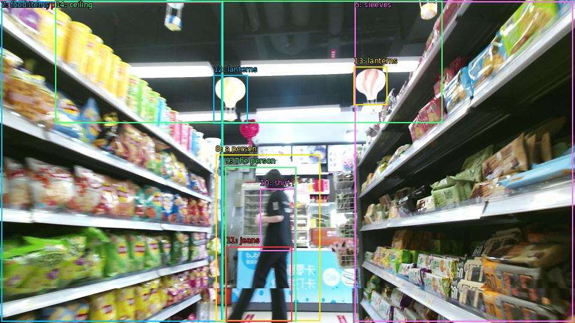

The image shows the interior of a grocery store aisle. The aisle is filled with shelves stocked with various types of snacks and drinks. On the left and right sides of the aisle, there are rows of shelves with different types of food items such as chips, crackers, and snacks. In the center of the image, there is a person walking past the shelves. The person is wearing a black shirt and jeans and appears to be in a hurry. The background is blurred, but it seems like the store is well-lit with colorful lanterns hanging from the ceiling.

Original · Caption raw · Grounding raw · Koordinate
Številke so lokalni ID regije. Dolge slikovne oznake so skrajšane; spodaj so celotne fraze. Napovedane regije se lahko prekrivajo ali opisujejo skupine.
| ID | Celotna fraza | bbox xyxy |
|---|---|---|
| 1 | The aisle | [2.3999998569488525, 3.510000228881836, 372.0, 537.5700073242188] |
| 2 | shelves | [2.3999998569488525, 3.510000228881836, 371.03997802734375, 537.5700073242188] |
| 3 | shelves | [592.7999877929688, 2.430000066757202, 956.6399536132812, 537.5700073242188] |
| 4 | sleeves | [2.3999998569488525, 2.9700000286102295, 372.0, 537.5700073242188] |
| 5 | sleeves | [592.7999877929688, 2.9700000286102295, 956.6399536132812, 537.5700073242188] |
| 6 | different types | [2.3999998569488525, 3.510000228881836, 370.0799865722656, 537.030029296875] |
| 7 | food items | [2.3999998569488525, 2.9700000286102295, 370.0799865722656, 537.030029296875] |
| 8 | a person | [360.47998046875, 258.9300231933594, 534.239990234375, 536.4900512695312] |
| 9 | The person | [376.79998779296875, 279.45001220703125, 494.8799743652344, 537.5700073242188] |
| 10 | shirt | [434.3999938964844, 315.6300048828125, 492.0, 419.3100280761719] |
| 11 | jeans | [377.7599792480469, 412.2900085449219, 487.1999816894531, 537.5700073242188] |
| 12 | lanterns | [356.6399841308594, 125.55000305175781, 413.2799987792969, 206.010009765625] |
| 13 | lanterns | [590.8800048828125, 111.51000213623047, 646.5599975585938, 175.77000427246094] |
| 14 | ceiling | [92.63999938964844, 1.350000023841858, 738.719970703125, 205.47000122070312] |